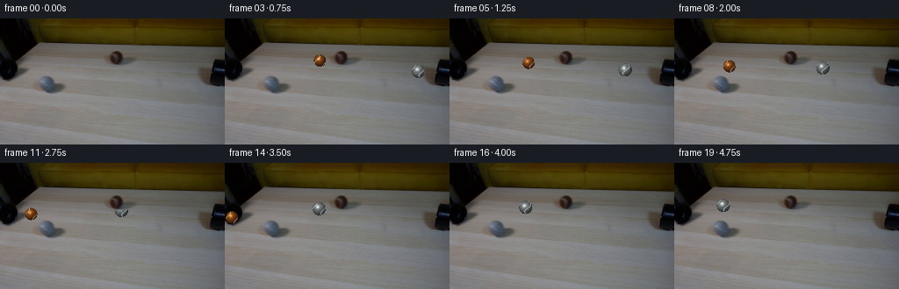
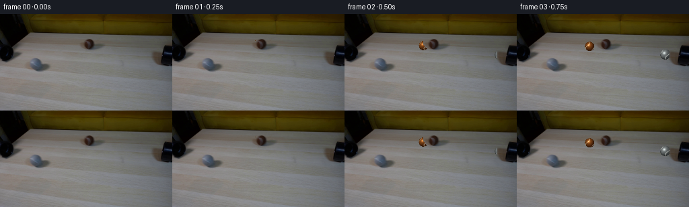

CODING AGENTS AS PIXEL WORLD MODELS
traex/DeepSeek-V4.1-Flash · 0180
点击播放 · 原生 RGB 像素
逐轮保存的候选
回放视频、检查图与代码变化。
每份候选均可单独播放。实际图片检查记录在下方工具轨迹中。
候选 01播放与检查图
点击播放 · 原生 RGB 像素


展开代码变化
--- 上一保存版本
+++ 本次保存版本
@@ -0,0 +1,232 @@
+from pathlib import Path
+
+import numpy as np
+from PIL import Image
+
+import artifact_io
+
+
+CASE_DIR = Path(__file__).resolve().parent
+WIDTH = 256
+HEIGHT = 144
+FRAMES = 20
+FPS = 4
+
+
+def dilate(mask, steps=1):
+ result = mask.copy()
+ for _ in range(steps):
+ padded = np.pad(result, 1, mode="constant")
+ result = (
+ padded[1:-1, 1:-1]
+ | padded[:-2, 1:-1]
+ | padded[2:, 1:-1]
+ | padded[1:-1, :-2]
+ | padded[1:-1, 2:]
+ | padded[:-2, :-2]
+ | padded[:-2, 2:]
+ | padded[2:, :-2]
+ | padded[2:, 2:]
+ )
+ return result
+
+
+def make_pipe_occlusion(base):
+ luminance = base.mean(axis=2)
+ mask = np.zeros((HEIGHT, WIDTH), dtype=bool)
+
+ # The central pipe and its low-contrast body are darker than the tabletop.
+ center_region = np.zeros_like(mask)
+ center_region[33:57, 118:158] = True
+ mask |= center_region & (luminance < 96.0)
+
+ # The right-hand pipe enters from the image edge.
+ right_region = np.zeros_like(mask)
+ right_region[40:82, 228:256] = True
+ mask |= right_region & (luminance < 88.0)
+
+ return dilate(mask, steps=1)
+
+
+def soft_shadow_alpha(xx, yy, cx, cy, rx, ry, strength):
+ distance = ((xx - cx) / rx) ** 2 + ((yy - cy) / ry) ** 2
+ return np.clip((1.12 - distance) / 0.42, 0.0, 1.0) * strength
+
+
+def render_ball(frame, cx, cy, radius, palette, spin):
+ """Render one fuzzy, seam-marked tennis ball with 4x local supersampling."""
+ margin = int(np.ceil(radius + 10.0))
+ x0 = max(0, int(np.floor(cx)) - margin)
+ x1 = min(WIDTH, int(np.ceil(cx)) + margin + 1)
+ y0 = max(0, int(np.floor(cy)) - margin)
+ y1 = min(HEIGHT, int(np.ceil(cy)) + margin + 1)
+ if x0 >= x1 or y0 >= y1:
+ return
+
+ scale = 4
+ xs = np.arange(x0, x1) + 0.5
+ ys = np.arange(y0, y1) + 0.5
+ sample_x = np.linspace(0.0, 1.0, scale, endpoint=False)
+ sample_y = np.linspace(0.0, 1.0, scale, endpoint=False)
+
+ # Pixel-center positions for each supersample.
+ xx = xs[None, :, None, None] + (sample_x[None, None, None, :] - 0.5) / scale
+ yy = ys[:, None, None, None] + (sample_y[None, None, :, None] - 0.5) / scale
+ xx = xx + 0.0 * yy
+ yy = yy + 0.0 * xx
+
+ nx = (xx - cx) / radius
+ ny = (yy - cy) / radius
+ radial_sq = nx * nx + ny * ny
+ inside = radial_sq <= 1.0
+ nz = np.sqrt(np.clip(1.0 - radial_sq, 0.0, 1.0))
+
+ light = np.array([-0.46, -0.60, 0.66], dtype=np.float64)
+ light /= np.linalg.norm(light)
+ diffuse = np.clip(nx * light[0] + ny * light[1] + nz * light[2], 0.0, 1.0)
+ facing = np.clip(nz, 0.0, 1.0)
+
+ # A tight highlight plus a dim broad sheen.
+ half_x = light[0] + 0.10
+ half_y = light[1] + 0.12
+ half_z = light[2] + 1.0
+ half_len = np.sqrt(half_x * half_x + half_y * half_y + half_z * half_z)
+ spec_dot = np.clip(
+ (nx * half_x + ny * half_y + nz * half_z) / half_len, 0.0, 1.0
+ )
+ specular = spec_dot**28
+
+ # The seam is a slightly wavy great-circle band, carried around by spin.
+ u = np.arctan2(nx, np.maximum(nz, 0.04))
+ v = np.arcsin(np.clip(ny, -1.0, 1.0))
+ seam_wave = np.sin(1.35 * u + spin + 0.95 * np.sin(2.15 * v))
+ seam = np.exp(-((seam_wave / 0.17) ** 2)) * np.clip((nz - 0.04) * 5.0, 0.0, 1.0)
+
+ # Fine fuzz is deterministic in object space and rotates with the ball.
+ fuzz = (
+ 0.52
+ + 0.28 * np.sin(39.0 * nx + 2.3 * spin)
+ + 0.20 * np.sin(43.0 * ny - 1.7 * spin)
+ )
+ fuzz = np.clip(fuzz, 0.0, 1.0)
+
+ ambient = np.asarray(palette["ambient"], dtype=np.float64)
+ lit = np.asarray(palette["lit"], dtype=np.float64)
+ dark = np.asarray(palette["dark"], dtype=np.float64)
+ seam_color = np.asarray(palette["seam"], dtype=np.float64)
+ highlight = np.asarray(palette["highlight"], dtype=np.float64)
+
+ lighting = 0.22 + 0.78 * diffuse
+ color = dark[None, None, None, None, :] * (1.0 - lighting[..., None])
+ color += lit[None, None, None, None, :] * lighting[..., None]
+ color = color * (0.90 + 0.12 * fuzz[..., None])
+ color = color * (0.55 + 0.45 * facing[..., None])
+ color = color * (1.0 - 0.58 * seam[..., None])
+ color += seam_color[None, None, None, None, :] * (0.58 * seam[..., None])
+ color += highlight[None, None, None, None, :] * (0.55 * specular[..., None])
+ color += ambient[None, None, None, None, :] * (0.055 * (1.0 - facing[..., None]))
+ color = np.clip(color, 0.0, 255.0)
+
+ count = inside.sum(axis=(2, 3))
+ safe_count = np.maximum(count, 1)
+ ball_color = np.sum(color * inside[..., None], axis=(2, 3)) / safe_count[..., None]
+ coverage = count / float(scale * scale)
+
+ shadow_x = xx + radius * 0.45
+ shadow_y = yy + radius * 0.62
+ shadow = soft_shadow_alpha(
+ shadow_x,
+ shadow_y,
+ cx + radius * 0.45,
+ cy + radius * 0.62,
+ radius * 1.02,
+ radius * 0.43,
+ 0.48,
+ )
+ shadow = shadow.mean(axis=(2, 3))
+
+ patch = frame[y0:y1, x0:x1].astype(np.float64)
+ patch *= 1.0 - 0.56 * shadow[..., None]
+ patch = patch * (1.0 - coverage[..., None]) + ball_color * coverage[..., None]
+ frame[y0:y1, x0:x1] = np.clip(patch, 0.0, 255.0).astype(np.uint8)
+
+
+def main():
+ base = np.asarray(Image.open(CASE_DIR / "first_frame.png").convert("RGB"), dtype=np.uint8)
+ if base.shape != (HEIGHT, WIDTH, 3):
+ raise ValueError(f"unexpected first_frame shape: {base.shape}")
+
+ pipe_occlusion = make_pipe_occlusion(base)
+ frames = np.empty((FRAMES, HEIGHT, WIDTH, 3), dtype=np.uint8)
+ frames[0] = base
+
+ brown = {
+ "ambient": (31, 13, 5),
+ "dark": (54, 24, 7),
+ "lit": (151, 83, 29),
+ "highlight": (222, 168, 106),
+ "seam": (224, 215, 187),
+ }
+ grey = {
+ "ambient": (31, 34, 35),
+ "dark": (48, 52, 53),
+ "lit": (137, 143, 143),
+ "highlight": (205, 211, 208),
+ "seam": (228, 230, 222),
+ }
+
+ # Positions are in pixels. The small sub-frame offset keeps the balls
+ # partially behind their pipe rims on the first moving frame.
+ brown_start = np.array([132.4, 44.8])
+ brown_velocity = np.array([-9.1, 1.28])
+ grey_start = np.array([248.0, 62.1])
+ grey_velocity = np.array([-10.3, -0.72])
+
+ for index in range(1, FRAMES):
+ frame = base.copy()
+ elapsed_frames = max(0.0, index - 0.35)
+
+ brown_position = brown_start + brown_velocity * elapsed_frames
+ grey_position = grey_start + grey_velocity * elapsed_frames
+
+ brown_radius = 6.55 + 0.008 * brown_position[1]
+ grey_radius = 7.15 + 0.008 * grey_position[1]
+ brown_spin = -1.10 * elapsed_frames + 0.7
+ grey_spin = -1.18 * elapsed_frames + 2.1
+
+ render_ball(
+ frame,
+ brown_position[0],
+ brown_position[1],
+ brown_radius,
+ brown,
+ brown_spin,
+ )
+ render_ball(
+ frame,
+ grey_position[0],
+ grey_position[1],
+ grey_radius,
+ grey,
+ grey_spin,
+ )
+
+ # Static pipe rims remain in front of the balls during emergence.
+ frame[pipe_occlusion] = base[pipe_occlusion]
+ frames[index] = frame
+
+ # Candidate sheet for local numeric inspection.
+ preview = np.concatenate(
+ [
+ np.concatenate([frames[i] for i in range(0, 10, 2)], axis=1),
+ np.concatenate([frames[i] for i in range(10, 20, 2)], axis=1),
+ ],
+ axis=0,
+ )
+ Image.fromarray(preview).save(CASE_DIR / ".tmp" / "candidate_preview.png")
+
+ artifact_io.save(frames, CASE_DIR)
+
+
+if __name__ == "__main__":
+ main()
可观测工具轨迹
实际执行的命令与返回图片。
命令 1exit 0
/bin/bash -c "pwd && rg --files -g 'prompt.txt' -g 'GENERATION_RULES.md' -g 'first_frame.png' -g '*.py' -g '*.js' -g '*.md' | sort"
命令 2exit 0
/bin/bash -c 'git status --short'
命令 3exit 0
/bin/bash -c "sed -n '1,240p' prompt.txt"
命令 4exit 0
/bin/bash -c "sed -n '1,260p' GENERATION_RULES.md"
命令 5exit 0
/bin/bash -c "sed -n '1,260p' artifact_io.py"
命令 6exit 0
/bin/bash -c 'file first_frame.png && identify first_frame.png 2>/dev/null || true && ls -lh first_frame.png'
命令 7exit 0
/bin/bash -c "python - <<'PY'
from PIL import Image
import numpy as np
im=np.array(Image.open('first_frame.png').convert('RGB'))
print(im.shape, im.dtype, im.min(), im.max(), im.mean(axis=(0,1)))
# color quantiles and common colors
q=np.quantile(im.reshape(-1,3),[0,.01,.05,.25,.5,.75,.95,.99,1],axis=0)
print('quantiles\\n',q)
# downsample mean into 16x9-ish cells and print dominant RGB
H,W,_=im.shape
gh,gw=18,32
for gy in range(gh):
row=[]
for gx in range(gw):
y0=round(gy*H/gh); y1=round((gy+1)*H/gh); x0=round(gx*W/gw); x1=round((gx+1)*W/gw)
c=im[y0:y1,x0:x1].mean((0,1)).astype(int)
# classify brightness and hues
r,g,b=c
mx=max(r,g,b); mn=min(r,g,b)
if mx<35: ch=' '
elif mx<70: ch='.'
elif mx<110: ch=':'
elif mx<150: ch='o'
elif mx<190: ch='O'
else: ch='#'
row.append(ch)
print(''.join(row))
PY"命令 8exit 0
/bin/bash -c "python - <<'PY'
from PIL import Image
import numpy as np
im=np.array(Image.open('first_frame.png').convert('RGB')).astype(float)
# dark masks stats by y and x
lum=im.mean(2)
for t in [20,35,50,65,80]:
m=lum<t
ys,xs=np.where(m)
print('thr',t,'count',len(xs),'bbox', (xs.min(),ys.min(),xs.max(),ys.max()) if len(xs) else None)
# row dark counts
print('row counts threshold 50')
for y in range(0,144,4):
m=lum[y:y+4]<50
print(f'{y:3d}', np.count_nonzero(m), ''.join('#' if m[:,x].mean()>.5 else '+' if m[:,x].any() else '.' for x in range(0,256,4)))
print('col counts threshold 50')
for x in range(0,256,4):
m=lum[:,x:x+4]<50
print(f'{x:3d}',np.count_nonzero(m))
PY"命令 9exit 0
/bin/bash -c "python - <<'PY' import importlib.util for m in ['numpy','PIL','cv2','scipy','skimage','imageio','matplotlib']: print(m, bool(importlib.util.find_spec(m))) PY"
命令 10exit 0
/bin/bash -c "python - <<'PY'
from PIL import Image
import numpy as np
im=np.array(Image.open('first_frame.png').convert('RGB'))
g=im.mean(2)
# downsample 2x2 blocks, chars by luminance
chars=' .:-=+*#%@'
for y in range(0,144,2):
row=''
for x in range(0,256,2):
v=g[y:y+2,x:x+2].mean()
row+=chars[min(9,int(v/256*10))]
print(row)
PY"命令 11exit 0
/bin/bash -c "python - <<'PY'
import cv2, numpy as np
from PIL import Image
im=cv2.imread('first_frame.png')
rgb=im[:,:,::-1]
# kmeans colors
Z=rgb.reshape(-1,3).astype(np.float32)
criteria=(cv2.TERM_CRITERIA_EPS+cv2.TERM_CRITERIA_MAX_ITER,30,1.0)
_,lab,cent=cv2.kmeans(Z,12,None,criteria,5,cv2.KMEANS_PP_CENTERS)
counts=np.bincount(lab.ravel(),minlength=12)
for i in np.argsort(-counts):
print(i,counts[i],cent[i].round(1))
# Hough line segments on gray
G=cv2.cvtColor(im,cv2.COLOR_BGR2GRAY)
E=cv2.Canny(G,40,100)
lines=cv2.HoughLinesP(E,1,np.pi/180,threshold=35,minLineLength=35,maxLineGap=8)
print('lines',0 if lines is None else len(lines))
if lines is not None:
for l in sorted(lines[:,0],key=lambda q:-np.hypot(*(q[2:]-q[:2])))[:40]:
x1,y1,x2,y2=map(int,l); print((x1,y1,x2,y2), 'len',round(np.hypot(x2-x1,y2-y1),1),'ang',round(np.degrees(np.arctan2(y2-y1,x2-x1)),1))
PY"命令 12exit 0
/bin/bash -c "python - <<'PY'
from PIL import Image
import numpy as np
im=np.array(Image.open('first_frame.png').convert('RGB'))
# print sample patches around top; classify exact-ish colors
for y in [0,8,16,24,28,32,36,40,44,48,52,56,60,64,68,72,76]:
vals=[]
for x in [0,16,32,48,64,80,96,112,128,144,160,176,192,208,224,240,255]:
vals.append('%02x%02x%02x'%tuple(im[y,x]))
print(f'y={y:3d}', ' '.join(vals))
PY"命令 13exit 0
/bin/bash -c "python - <<'PY'
from PIL import Image
import numpy as np
im=np.array(Image.open('first_frame.png').convert('RGB'))
# Rows as 16 pixel averages of every 8th x
for y in range(0,90,4):
vals=[]
for x in range(0,256,8):
c=im[y:min(y+4,144),x:x+8].mean((0,1)).astype(int)
vals.append('%3d,%3d,%3d'%tuple(c))
print(f'{y:3d}', ' | '.join(vals))
PY"命令 14exit 0
/bin/bash -c "python - <<'PY'
from PIL import Image
import numpy as np, cv2
im=np.array(Image.open('first_frame.png').convert('RGB'))
g=cv2.cvtColor(im,cv2.COLOR_RGB2GRAY)
# Edge chars
ed=cv2.Canny(g,25,70)
for y in range(0,144,2):
row=''
for x in range(0,256,2):
b=ed[y:y+2,x:x+2]
row += '#' if b.mean()>50 else '+' if b.any() else ' '
print(f'{y:3d} {row}')
PY"命令 15exit 0
/bin/bash -c "python - <<'PY'
import cv2, numpy as np
from PIL import Image
im=np.array(Image.open('first_frame.png').convert('RGB'))
Z=im.reshape(-1,3).astype(np.float32)
criteria=(cv2.TERM_CRITERIA_EPS+cv2.TERM_CRITERIA_MAX_ITER,50,0.5)
_,lab,cent=cv2.kmeans(Z,16,None,criteria,10,cv2.KMEANS_PP_CENTERS)
counts=np.bincount(lab.ravel(),minlength=16)
order=np.argsort(-counts)
for rank,i in enumerate(order):
print(chr(48+rank) if rank<10 else chr(65+rank-10),i,counts[i],cent[i].astype(int))
remap={int(i):(chr(48+r) if r<10 else chr(65+r-10)) for r,i in enumerate(order)}
L=lab.reshape(144,256)
for y in range(0,144,3):
row=''
for x in range(0,256,3):
vals,cnts=np.unique(L[y:y+3,x:x+3],return_counts=True)
row+=remap[int(vals[np.argmax(cnts)])]
print(f'{y:3d} {row}')
PY"命令 16exit 0
/bin/bash -c "python - <<'PY'
import cv2, numpy as np
from PIL import Image
im=np.array(Image.open('first_frame.png').convert('RGB'))
g=cv2.cvtColor(im,cv2.COLOR_RGB2GRAY)
for thr in [20,30,40,50,60,70,80,90,100]:
m=(g<thr).astype('uint8')
n,L,stats,cent=cv2.connectedComponentsWithStats(m,8)
comps=[]
for i in range(1,n):
x,y,w,h,a=stats[i]
if a>=20: comps.append((a,x,y,w,h,tuple(cent[i].round(1))))
comps.sort(reverse=True)
print('\\nthr',thr,'n',len(comps))
for c in comps[:25]: print(c)
PY"命令 17exit 0
/bin/bash -c "python - <<'PY'
from PIL import Image
import numpy as np
im=np.array(Image.open('first_frame.png').convert('RGB')).astype(float)
# candidate region visualization coarse actual RGB chars for x100-180 y25-60
for y in range(24,61):
row=''
for x in range(100,181,2):
c=im[y:y+1,x:x+2].mean((0,1))
if c.mean()<30: ch='@'
elif c.mean()<55: ch='%'
elif c.mean()<75: ch='#'
elif c.mean()<95: ch='*'
elif c.mean()<115: ch='+'
elif c.mean()<130: ch='-'
elif c.mean()<140: ch='.'
else: ch=' '
row+=ch
print(f'{y:2d} {row}')
PY"命令 18exit 0
/bin/bash -c "python - <<'PY'
from PIL import Image
import numpy as np
im=np.array(Image.open('first_frame.png').convert('RGB')).astype(float)
# local min/edges around 120-145,35-55 print colors and luminance
for y in range(34,56):
print('y',y)
for x in range(118,148,2):
r,g,b=im[y,x].astype(int)
print(f'{x}:{int((r+g+b)/3):3d}',end=' ')
print()
PY"命令 19exit 0
/bin/bash -c "python - <<'PY'
import cv2, numpy as np
from PIL import Image
im=np.array(Image.open('first_frame.png').convert('RGB'))
g=cv2.cvtColor(im,cv2.COLOR_RGB2GRAY)
# texture metric local std and gradient magnitude in region
for y in range(28,70,2):
row=''
for x in range(0,256,2):
b=g[y:y+2,x:x+2]
s=b.std()
row += ' ' if s<3 else '.' if s<6 else ':' if s<12 else '#' if s<25 else '@'
print(f'{y:3d} {row}')
PY"命令 20exit 0
/bin/bash -c "python - <<'PY'
import cv2,numpy as np
from PIL import Image
im=np.array(Image.open('first_frame.png').convert('RGB'))
# HSV brown vs gray components
hsv=cv2.cvtColor(im,cv2.COLOR_RGB2HSV)
for name,m in [('brown',(hsv[:,:,0]>8)&(hsv[:,:,0]<35)&(hsv[:,:,1]>60)&(hsv[:,:,2]>15)),('gray',(hsv[:,:,1]<30)&(hsv[:,:,2]>50))]:
m=m.astype('uint8')
n,L,stats,cent=cv2.connectedComponentsWithStats(m,8)
print(name)
for i in np.argsort(-stats[1:,4])[:15]+1:
x,y,w,h,a=stats[i]; print(a,(x,y,w,h),cent[i])
PY"命令 21exit 0
/bin/bash -c "python - <<'PY'
from PIL import Image
import numpy as np
im=np.array(Image.open('first_frame.png').convert('RGB')).astype(int)
# 16x16 patches detailed 3-level chars for possible pipes top region
for y0,y1,x0,x1 in [(30,60,110,150),(28,55,215,256),(28,50,70,110)]:
print('region',y0,y1,x0,x1)
for y in range(y0,y1):
row=''
for x in range(x0,x1):
r,g,b=im[y,x]; l=(r+g+b)/3
# brown distinguish
if l<25: ch='@'
elif l<45: ch='#'
elif l<65: ch='*'
elif l<85: ch='+'
elif l<105: ch='-'
elif l<120: ch='.'
else: ch=' '
row+=ch
print(row)
PY"命令 22exit 0
/bin/bash -c "python - <<'PY'
from PIL import Image
import numpy as np, cv2
im=np.array(Image.open('first_frame.png').convert('RGB'))
g=im.mean(2)
# print downsample 2x2 luminance chars, with row/col labels; use 128x72
chars=' .:-=+*#%@'
for y in range(0,144,2):
row=''
for x in range(0,256,2):
v=g[y:y+2,x:x+2].mean()
row+=chars[min(9,int(v/256*10))]
print(f'{y:3d}|{row}|')
PY"命令 23exit 0
/bin/bash -c "python - <<'PY'
from PIL import Image
import numpy as np
im=np.array(Image.open('first_frame.png').convert('RGB')).astype(int)
# classify colors in 3x3 blocks using rules
for y in range(0,144,2):
row=''
for x in range(0,256,2):
c=im[y:y+2,x:x+2].mean((0,1)); r,g,b=c; l=c.mean(); sat=max(c)-min(c)
if l<20: ch='@'
elif l<35: ch='%'
elif l<50: ch='#'
elif l<70 and sat>15: ch='b' # dark brown
elif l<70: ch='+'
elif l<90 and r-g>10: ch='w' # warm
elif l<90: ch='-'
elif l<110 and sat>15: ch='o'
elif l<110: ch='.'
elif l<125 and sat>10: ch='d'
elif l<125: ch=','
elif l<140: ch=' '
else: ch=':'
row+=ch
print(f'{y:3d} {row}')
PY"命令 24exit 0
/bin/bash -c "python - <<'PY'
from PIL import Image
import numpy as np
im=np.array(Image.open('first_frame.png').convert('RGB')).astype(float)
# make enlarged crop as png to inspect numerically? save to tmp allowed
Image.fromarray(im.astype('uint8')).crop((100,30,160,65)).resize((600,350),Image.Resampling.NEAREST).save('.tmp/crop_pipe1.png')
Image.fromarray(im.astype('uint8')).crop((210,25,256,60)).resize((460,350),Image.Resampling.NEAREST).save('.tmp/crop_pipe2.png')
print('saved')
PY"命令 25exit 0
/bin/bash -c "python - <<'PY'
import cv2,numpy as np
from PIL import Image
im=np.array(Image.open('first_frame.png').convert('RGB'))
# estimate local background via median filters at scales and report dark residual candidates
for k in [9,15,21,31]:
bg=cv2.medianBlur(im,k)
d=im.astype(float)-bg.astype(float)
score=np.sqrt((d*d).sum(2))
# count by regions
print('k',k,'quant',np.quantile(score,[.9,.95,.99,.995,.999]),'max',score.max())
for reg in [(90,130,35,60),(215,256,30,60),(0,100,0,80)]:
x0,x1,y0,y1=reg
print(reg, score[y0:y1,x0:x1].max(), np.unravel_index(score[y0:y1,x0:x1].argmax(),score[y0:y1,x0:x1].shape))
PY"命令 26exit 0
/bin/bash -c "python - <<'PY'
from PIL import Image
import numpy as np
im=np.array(Image.open('first_frame.png').convert('RGB')).astype(float)
# Print RGB for center blob by each y, segments luminance under 60 x 115-145
for y in range(35,55):
xs=np.where(im[y,:,0].mean(0) if False else im[y,110:150].mean(1)<60)[0]+110
if len(xs): print(y, xs.min(),xs.max(), [tuple(im[y,x].astype(int)) for x in range(xs.min(),xs.max()+1,2)])
PY"命令 27exit 0
/bin/bash -c "python - <<'PY'
from PIL import Image
import numpy as np
im=np.array(Image.open('first_frame.png').convert('RGB')).astype(int)
# pixel values around right edge at y 42-68 x220-255 at every 2
for y in range(42,70,2):
print(y,[(x,tuple(im[y,x])) for x in range(220,256,4)])
PY"命令 28exit 0
/bin/bash -c "python - <<'PY'
from PIL import Image
import numpy as np
im=np.array(Image.open('first_frame.png').convert('RGB')).astype(int)
# segment right pipe dark rectangle boundaries by rows
for y in range(44,72):
xs=np.where(im[y,:,0]<30)[0]
if len(xs): print(y, xs[xs>200].min() if np.any(xs>200) else None,xs.max(), 'all', (xs.min(),xs.max()))
PY"命令 29exit 0
/bin/bash -c "python - <<'PY'
from PIL import Image
import numpy as np
im=np.array(Image.open('first_frame.png').convert('RGB')).astype(int)
# dump rgb values as hex in center blob, maybe identify brown ball vs pipe
for y in range(37,53):
print(y,' '.join('%02x%02x%02x'%tuple(im[y,x]) for x in range(123,141)))
PY"命令 30exit 0
/bin/bash -c "python - <<'PY'
from PIL import Image
import numpy as np
im=np.array(Image.open('first_frame.png').convert('RGB')).astype(int)
# grayscale raw values in center region with coordinates every 1, use characters by threshold
chars='@%#*+=-:. '
for y in range(33,57):
print(f'{y:2d}', ''.join(chars[min(9,int(im[y,x].mean()/16))] for x in range(110,155)))
PY"命令 31exit 0
/bin/bash -c "python - <<'PY'
from PIL import Image
import numpy as np
im=np.array(Image.open('first_frame.png').convert('RGB')).astype(int)
for x in range(0,256,8):
print(f'{x:3d}', ' '.join('%02x%02x%02x'%tuple(im[y,x]) for y in range(0,80,4)))
PY"命令 32exit 0
/bin/bash -c "python - <<'PY'
from PIL import Image
import numpy as np
im=np.array(Image.open('first_frame.png').convert('RGB')).astype(int)
# Print raw RGB map at right region x230-255 y40-75 using one char per pixel categories
for y in range(40,76):
row=''
for x in range(230,256):
r,g,b=im[y,x]; l=(r+g+b)/3
if l<10: ch='@'
elif l<20: ch='%'
elif l<30: ch='#'
elif l<40: ch='*'
elif l<55: ch='+'
elif l<70: ch='-'
elif l<85: ch='.'
elif l<100: ch=','
elif l<115: ch=' '
else: ch=':'
row+=ch
print(f'{y:2d} {row}')
PY"命令 33exit 0
/bin/bash -c "python - <<'PY'
from PIL import Image
import numpy as np
im=np.array(Image.open('first_frame.png').convert('RGB')).astype(int)
# exact dark blob center coords based threshold and row spans
for y in range(34,57):
xs=np.where(im[y,110:155].mean(1)<80)[0]+110
if len(xs): print(y, xs.min(),xs.max(), len(xs))
PY"命令 34exit 0
/bin/bash -c "python - <<'PY'
from PIL import Image
import numpy as np
im=np.array(Image.open('first_frame.png').convert('RGB')).astype(int)
# find dark connected blob at center and component at threshold 80
import cv2
m=(im.mean(2)<80).astype('uint8')
n,L,stats,cents=cv2.connectedComponentsWithStats(m,8)
for i in range(1,n):
x,y,w,h,a=stats[i]
if 100<x<160 and 30<y<60: print(i,a,(x,y,w,h),cents[i])
PY"命令 35exit 0
/bin/bash -c "python - <<'PY'
from PIL import Image
import numpy as np, cv2
im=np.array(Image.open('first_frame.png').convert('RGB')).astype(np.uint8)
# perspective perspective lines? use Hough on region table edge
for name,box in [('all',(0,0,256,144)),('table',(0,80,256,144)),('upper',(0,25,256,90))]:
x0,y0,x1,y1=box; g=cv2.cvtColor(im[y0:y1,x0:x1],cv2.COLOR_RGB2GRAY)
e=cv2.Canny(g,20,60)
ls=cv2.HoughLinesP(e,1,np.pi/720,threshold=18,minLineLength=30,maxLineGap=10)
print(name, 0 if ls is None else len(ls))
if ls is not None:
for q in sorted(ls[:,0],key=lambda q:-np.hypot(q[2]-q[0],q[3]-q[1]))[:20]:
print(tuple((q+[x0,y0,x0,y0]).tolist()),round(np.degrees(np.arctan2(q[3]-q[1],q[2]-q[0])),1))
PY"命令 36exit 0
/bin/bash -c "python - <<'PY'
from PIL import Image
import numpy as np
im=np.array(Image.open('first_frame.png').convert('RGB')).astype(int)
for y in range(26,92):
row=''
for x in range(0,44):
r,g,b=im[y,x]; l=(r+g+b)/3; sat=max(r,g,b)-min(r,g,b)
if l<15: ch='@'
elif l<30: ch='%'
elif l<50: ch='#'
elif l<70: ch='*'
elif l<90: ch='+'
elif l<110: ch='-'
elif l<125: ch='.'
elif l<140: ch=','
else: ch=' '
row+=ch
print(f'{y:2d} {row}')
PY"命令 37exit 0
/bin/bash -c "python - <<'PY'
import cv2,numpy as np
from PIL import Image
im=np.array(Image.open('first_frame.png').convert('RGB'))
# save mask overlays for inspection
for thresh in [40,60,80,100]:
m=(im.mean(2)<thresh).astype(np.uint8)*255
Image.fromarray(m).resize((1024,576),Image.Resampling.NEAREST).save(f'.tmp/mask{thresh}.png')
print('done')
PY"命令 38exit 1
/bin/bash -c "python - <<'PY'
import cv2, numpy as np
from PIL import Image
im=np.array(Image.open('first_frame.png').convert('RGB')).astype(np.float32)
# fit plane-ish background using morphological closing on grayscale and print residual dark areas
for k in [7,11,15,21]:
# use max then median to remove dark blobs
bg=cv2.medianBlur(cv2.dilate(im,np.ones((k,k),np.uint8)),k)
d=np.linalg.norm(im-bg,axis=2)
print('k',k,'q',np.quantile(d,[.5,.9,.95,.99,.999]))
# top residual coords in table region
for reg in [(100,150,30,60),(230,256,40,75),(0,60,55,90)]:
x0,x1,y0,y1=reg
dd=d[y0:y1,x0:x1]
yy,xx=np.unravel_index(np.argmax(dd),dd.shape)
print(reg,round(float(dd.max()),1),(x0+xx,y0+yy))
PY"命令 39exit 0
/bin/bash -c "python - <<'PY'
import cv2, numpy as np
from PIL import Image
im=np.array(Image.open('first_frame.png').convert('RGB'))
for k in [7,11,15,21]:
bg=cv2.medianBlur(cv2.dilate(im,np.ones((k,k),np.uint8)),k)
d=np.linalg.norm(im.astype(float)-bg.astype(float),axis=2)
print('k',k,'q',np.quantile(d,[.5,.9,.95,.99,.999]))
for reg in [(100,150,30,60),(230,256,40,75),(0,60,55,90)]:
x0,x1,y0,y1=reg
dd=d[y0:y1,x0:x1]
yy,xx=np.unravel_index(np.argmax(dd),dd.shape)
print(reg,round(float(dd.max()),1),(x0+xx,y0+yy))
PY"命令 40exit 0
/bin/bash -c "python - <<'PY'
from PIL import Image
import numpy as np
im=np.array(Image.open('first_frame.png').convert('RGB')).astype(int)
# table horizon interpolation, print raw colors along x=0..255 y selected
for y in [75,76,77,78,79,80,81,82,83,84,90,100,120,140]:
print(y, [tuple(im[y,x]) for x in [0,16,32,64,96,128,160,192,224,255]])
PY"命令 41exit 0
/bin/bash -c "python - <<'PY'
from PIL import Image
import numpy as np
im=np.array(Image.open('first_frame.png').convert('RGB')).astype(int)
# raw grayscale map left table region 0-120 x 20-90 at 1 char per 1x1
chars='@%#*+=-:. '
for y in range(24,90):
row=''
for x in range(0,120):
l=im[y,x].mean()
row+=chars[min(9,int(l/16))]
print(f'{y:2d} {row}')
PY"命令 42exit 0
/bin/bash -c "python - <<'PY'
import cv2,numpy as np
from PIL import Image
im=np.array(Image.open('first_frame.png').convert('RGB'))
g=cv2.cvtColor(im,cv2.COLOR_RGB2GRAY).astype(float)
for name,(x0,y0,x1,y1) in {'center':(110,32,160,58),'right':(225,40,256,78),'left':(0,20,100,80)}.items():
p=g[y0:y1,x0:x1]
gx=cv2.Sobel(p,cv2.CV_64F,1,0,ksize=3); gy=cv2.Sobel(p,cv2.CV_64F,0,1,ksize=3)
J=np.array([[np.sum(gx*gx),np.sum(gx*gy)],[np.sum(gx*gy),np.sum(gy*gy)]])
vals,vecs=np.linalg.eigh(J)
print(name,'J',J,'eig',vals,'vec major',vecs[:,np.argmax(vals)],'angle',np.degrees(np.arctan2(vecs[1,np.argmax(vals)],vecs[0,np.argmax(vals)])))
# gradient direction around dark mask
m=p<60
ys,xs=np.where(m)
print(' dark bbox', (xs.min()+x0,ys.min()+y0,xs.max()+x0,ys.max()+y0),'cent',(xs.mean()+x0,ys.mean()+y0))
PY"命令 43exit 0
/bin/bash -c "python - <<'PY'
import cv2,numpy as np
from PIL import Image
im=np.array(Image.open('first_frame.png').convert('RGB')).astype(np.float32)
# try fit ellipse to center dark contour, threshold levels
g=cv2.cvtColor(im,cv2.COLOR_RGB2GRAY)
for t in [40,50,60,70,80,90,100]:
m=(g<t).astype(np.uint8)*255
m=cv2.morphologyEx(m,cv2.MORPH_CLOSE,np.ones((3,3),np.uint8))
cnts,_=cv2.findContours(m,cv2.RETR_EXTERNAL,cv2.CHAIN_APPROX_NONE)
arr=[]
for c in cnts:
x,y,w,h=cv2.boundingRect(c)
if x>100 and x<180 and y>25 and y<65 and w>5 and h>5:
if len(c)>=5:
ell=cv2.fitEllipse(c); arr.append((cv2.contourArea(c),(x,y,w,h),ell))
print(t,arr[:5])
PY"命令 44exit 0
/bin/bash -c "python - <<'PY'
from PIL import Image
import numpy as np, cv2
im=np.array(Image.open('first_frame.png').convert('RGB'))
# determine full table plane color statistics and where edges are
# low texture regions / dark components using local contrast
g=cv2.cvtColor(im,cv2.COLOR_RGB2GRAY)
for t in [30,40,50,60,70,80,90]:
m=(g<t).astype(np.uint8)
m=cv2.morphologyEx(m,cv2.MORPH_OPEN,np.ones((2,2),np.uint8))
n,L,s,c=cv2.connectedComponentsWithStats(m,8)
print('\\nt',t)
for i in np.argsort(-s[1:,4])[:15]+1:
x,y,w,h,a=s[i]
print(a,(x,y,w,h),tuple(c[i].round(1)))
PY"命令 45exit 0
/bin/bash -c "python - <<'PY'
from PIL import Image
import numpy as np
im=np.array(Image.open('first_frame.png').convert('RGB')).astype(int)
# print detailed values around center ellipse and edges, perhaps blob is actual pipe mouth
for y in range(35,54):
vals=[]
for x in range(118,146,2):
vals.append(int(im[y,x].mean()))
print(y,' '.join(f'{v:3d}' for v in vals))
PY"命令 46exit 0
/bin/bash -c "python - <<'PY'
from PIL import Image
import numpy as np
im=np.array(Image.open('first_frame.png').convert('RGB')).astype(int)
# print detailed right pipe pixels: row spans at thresholds, plus horizontal gradient
for y in range(44,72,2):
vals=[]
for x in range(232,256,2):
vals.append(int(im[y,x].mean()))
print(y,' '.join(f'{v:3d}' for v in vals))
PY"命令 47exit 0
/bin/bash -c "python - <<'PY'
from PIL import Image
import numpy as np
im=np.array(Image.open('first_frame.png').convert('RGB')).astype(int)
for t in [40,60,80,100]:
print('\\nTHR',t)
for y in range(24,86,2):
m=im[y].mean(1)<t
ints=[]; s=None
for x,v in enumerate(m):
if v and s is None:s=x
if not v and s is not None:ints.append((s,x-1));s=None
if s is not None:ints.append((s,255))
if ints: print(f'{y:2d}',ints)
PY"命令 48exit 0
/bin/bash -c "python - <<'PY'
import cv2,numpy as np
from PIL import Image
im=np.array(Image.open('first_frame.png').convert('RGB'))
g=cv2.cvtColor(im,cv2.COLOR_RGB2GRAY)
for p1,p2 in [(30,10),(50,15),(80,20)]:
for rmin,rmax in [(4,12),(8,20),(12,30)]:
cs=cv2.HoughCircles(g,cv2.HOUGH_GRADIENT,dp=1,minDist=10,param1=p1,param2=p2,minRadius=rmin,maxRadius=rmax)
print(p1,p2,rmin,rmax, None if cs is None else np.round(cs[0],1).tolist())
PY"命令 49exit 0
/bin/bash -c "python - <<'PY'
from PIL import Image
import numpy as np
im=np.array(Image.open('first_frame.png').convert('RGB')).astype(int)
# analyze left dark region around x0-40 y24-72: centerline per row threshold 50
for t in [20,30,40,50,60,70]:
print('T',t)
for y in range(26,72,4):
xs=np.where(im[y,:80].mean(1)<t)[0]
if len(xs): print(y,(xs.min(),xs.max()),len(xs))
PY"命令 50exit 0
/bin/bash -c "python - <<'PY'
from PIL import Image
import numpy as np
im=np.array(Image.open('first_frame.png').convert('RGB')).astype(int)
# raw RGB in left pipe mouth region 0-30 x 25-72 maybe identify texture
for y in range(25,73,2):
print(f'{y:2d}', ' '.join('%02x%02x%02x'%tuple(im[y,x]) for x in range(0,32,2)))
PY"命令 51exit 0
/bin/bash -c "python - <<'PY'
from PIL import Image
import numpy as np
im=np.array(Image.open('first_frame.png').convert('RGB')).astype(int)
# locate all circularish dark features by radial profile in tabletop; center candidates
for cx in [52,132,247]:
for cy in [45,62,75,80]:
yy,xx=np.mgrid[0:144,0:256]
rr=np.sqrt((xx-cx)**2+(yy-cy)**2)
vals=[im[(rr>=r)&(rr<r+1)].mean() for r in range(0,15)]
print((cx,cy),[round(v) for v in vals])
PY"命令 52exit 0
/bin/bash -c "python - <<'PY'
import cv2,numpy as np
from PIL import Image
im=np.array(Image.open('first_frame.png').convert('RGB')).astype(np.uint8)
# Test color-space channels for pipe ellipses and circle
lab=cv2.cvtColor(im,cv2.COLOR_RGB2LAB); hsv=cv2.cvtColor(im,cv2.COLOR_RGB2HSV)
for nm,ch in [('R',im[:,:,0]),('G',im[:,:,1]),('B',im[:,:,2]),('L',lab[:,:,0]),('a',lab[:,:,1]),('b',lab[:,:,2]),('S',hsv[:,:,1]),('V',hsv[:,:,2])]:
print(nm,'center min',ch[32:60,110:160].min(),'right',ch[35:80,220:256].min(),'q',np.quantile(ch,[.01,.05,.5,.95,.99]))
PY"命令 53exit 0
/bin/bash -c "python - <<'PY'
from PIL import Image
import numpy as np
im=np.array(Image.open('first_frame.png').convert('RGB')).astype(int)
# table perspective: darkening by y and x, find plausible table boundaries by row brightness
# print full image quantile grid mean brightness
for y0 in range(0,144,8):
vals=[]
for x0 in range(0,256,16):
vals.append(int(im[y0:y0+8,x0:x0+16].mean()))
print(f'{y0:3d}',vals)
PY"命令 54exit 0
/bin/bash -c "python - <<'PY'
import cv2,numpy as np
from PIL import Image
im=np.array(Image.open('first_frame.png').convert('RGB'))
# fit planes to tabletop rgb excluding dark and top
H,W=im.shape[:2]; yy,xx=np.mgrid[0:H,0:W]
mask=(yy>84)&(im.mean(2)>90)&(np.abs(im[:,:,0].astype(int)-im[:,:,2])<40)
# fit polynomial smooth rgb by least squares with features x,y,x2,xy,y2
for c in range(3):
A=np.c_[np.ones(mask.sum()),xx[mask]/W,yy[mask]/H,(xx[mask]/W)**2,(xx[mask]/W)*(yy[mask]/H),(yy[mask]/H)**2]
coef=np.linalg.lstsq(A,im[:,:,c][mask],rcond=None)[0]
pred=np.c_[np.ones(H*W),xx.ravel()/W,yy.ravel()/H,(xx.ravel()/W)**2,(xx.ravel()/W)*(yy.ravel()/H),(yy.ravel()/H)**2]@coef
err=im[:,:,c][mask]-A@coef
print(c,coef,'rmse',np.sqrt(np.mean(err**2)))
PY"命令 55exit 0
/bin/bash -c "python - <<'PY'
import cv2,numpy as np
from PIL import Image
im=np.array(Image.open('first_frame.png').convert('RGB'))
# Canny visual as SVG? print edges in tabletop excluding lots texture using LSD
lsd=cv2.createLineSegmentDetector(cv2.LSD_REFINE_STD)
lines,widths,prec,nfa=lsd.detect(cv2.cvtColor(im,cv2.COLOR_RGB2GRAY))
arr=[]
for i,l in enumerate(lines[:,0]):
x1,y1,x2,y2=l; ln=np.hypot(x2-x1,y2-y1); ang=np.degrees(np.arctan2(y2-y1,x2-x1))
if ln>8 and 20<y1<90 and 20<y2<90:
arr.append((ln,ang,(x1,y1,x2,y2)))
for q in sorted(arr,reverse=True)[:80]: print(f'len {q[0]:.1f} ang {q[1]:.1f} line {tuple(round(v,1) for v in q[2])}')
PY"命令 56exit 0
/bin/bash -c "python - <<'PY'
from PIL import Image
import numpy as np
im=np.array(Image.open('first_frame.png').convert('RGB')).astype(int)
# print grayscale in region x180-256 y20-45, perhaps right pipe body
chars='@%#*+=-:. '
for y in range(20,46):
print(f'{y:2d}', ''.join(chars[min(9,int(im[y,x].mean()/16))] for x in range(180,256)))
PY"命令 57exit 0
/bin/bash -c 'ls -la'
命令 58exit 0
/bin/bash -c "python - <<'PY'
from PIL import Image
import numpy as np
im=np.array(Image.open('first_frame.png').convert('RGB')).astype(int)
# Find tabletop pixels darker than local smooth row baseline, identify anomalies via residual from per-row median
g=im.mean(2)
for y in range(30,82):
row=g[y]
med=np.median(row)
# list intervals where row < med-25
m=row<med-20
ints=[];s=None
for x,v in enumerate(m):
if v and s is None:s=x
if not v and s is not None:ints.append((s,x-1,int(row[s:x].min())));s=None
if s is not None:ints.append((s,255,int(row[s:].min())))
if ints: print(y,ints)
PY"命令 59exit 0
/bin/bash -c "python - <<'PY'
from PIL import Image
import numpy as np
im=np.array(Image.open('first_frame.png').convert('RGB')).astype(int)
# raw region around 45-75 x 45-75
chars='@%#*+=-:. '
for y in range(55,88):
print(f'{y:2d}', ''.join(chars[min(9,int(im[y,x].mean()/16))] for x in range(38,82)))
PY"命令 60exit 0
/bin/bash -c "python - <<'PY'
from PIL import Image
import numpy as np
im=np.array(Image.open('first_frame.png').convert('RGB')).astype(int)
# print detailed table region where left pipe maybe x0-80 y30-70 RGB colors at selected x
for y in range(30,72,4):
print('y',y)
for x in [0,4,8,12,16,20,24,28,32,36,40,44,48,52,56,60,64,68,72,76,80]:
print(f'{x}:{int(im[y,x].mean())}',end=' ')
print()
PY"命令 61exit 0
/bin/bash -c "python - <<'PY'
from PIL import Image
import numpy as np
im=np.array(Image.open('first_frame.png').convert('RGB')).astype(int)
# characterize dark left background/object boundary: for each y, first x where lum>60
for y in range(24,80,2):
a=im[y].mean(1)
xs=np.where(a>60)[0]
print(y, xs.min() if len(xs) else None)
PY"命令 62exit 0
/bin/bash -c "python - <<'PY'
import cv2, numpy as np
from PIL import Image
im=np.array(Image.open('first_frame.png').convert('RGB'))
# generate mask overlays on source for candidate pipe geometry and balls to inspect via numeric stats
# calculate color along expected ball shading; choose palettes from source stats around bright gray tabletop
for reg in [(90,110,90,130),(170,210,80,120),(120,180,60,90),(70,100,45,70)]:
x0,x1,y0,y1=reg
p=im[y0:y1,x0:x1]
print(reg,'mean',p.mean((0,1)).round(1),'std',p.std((0,1)).round(1),'q',np.quantile(p,[.1,.5,.9],axis=(0,1)).round(0))
PY"命令 63exit 1
/bin/bash -c "python - <<'PY'
import cv2,numpy as np
from PIL import Image
im=np.array(Image.open('first_frame.png').convert('RGB'))
g=cv2.cvtColor(im,cv2.COLOR_RGB2GRAY)
for reg in [(40,62,88,95),(110,150,30,60)]:
x0,x1,y0,y1=reg
print('REG',reg)
for t in [50,60,70,80,90,100]:
m=(g[y0:y1,x0:x1]<t).astype(np.uint8)
m=cv2.morphologyEx(m,cv2.MORPH_CLOSE,np.ones((3,3),np.uint8))
n,L,s,c=cv2.connectedComponentsWithStats(m,8)
arr=[]
for i in range(1,n):
x,y,w,h,a=s[i]
if a>20:
cc=cv2.findContours((L==i).astype(np.uint8),cv2.RETR_EXTERNAL,cv2.CHAIN_APPROX_NONE)[0][0]
ell=cv2.fitEllipse(cc) if len(cc)>=5 else None
arr.append((a,(x+x0,y+y0,w,h),(cc.mean(0)[0]+x0,cc.mean(0)[1]+y0),ell))
print(t,arr)
PY"命令 64exit 1
/bin/bash -c 'python generate.py'
命令 65exit 1
/bin/bash -c 'python generate.py'
命令 66exit 0
/bin/bash -c "nl -ba generate.py | sed -n '55,90p'"
命令 67exit 0
/bin/bash -c 'python generate.py'
命令 68exit 0
/bin/bash -c "python - <<'PY'
from PIL import Image
import numpy as np
orig=np.array(Image.open('first_frame.png').convert('RGB'))
fr=np.array(Image.open('frames/00.png').convert('RGB'))
print('frame0 exact',np.array_equal(orig,fr),'maxdiff',np.abs(orig.astype(int)-fr.astype(int)).max())
for i in [0,1,2,4,8,12,16,19]:
a=np.array(Image.open(f'frames/{i:02d}.png').convert('RGB'))
print(i,'mean',a.mean((0,1)).round(2),'changed',np.count_nonzero(a"'!=orig),'"'maxdiff',np.abs(a.astype(int)-orig.astype(int)).max())
PY"命令 69exit 0
/bin/bash -c "python - <<'PY'
from PIL import Image
import numpy as np
for fi in [1,2,4,8,12,16,19]:
im=np.array(Image.open(f'frames/{fi:02d}.png').convert('RGB'))
# downsample 4x4 and ANSI half-blocks
H,W=im.shape[:2]; sx=4; sy=4
small=im[:H//sy*sy,:W//sx*sx].reshape(H//sy,sy,W//sx,sx,3).mean((1,3)).astype(int)
print('\\nFRAME',fi)
for y in range(0,small.shape[0],2):
line=''
for x in range(small.shape[1]):
a=small[y,x]; b=small[min(y+1,small.shape[0]-1),x]
line+=f'\\x1b[38;2;{a[0]};{a[1]};{a[2]}m\\x1b[48;2;{b[0]};{b[1]};{b[2]}mâ'
print(line+'\\x1b[0m')
PY"命令 70exit 0
/bin/bash -c "python - <<'PY'
from PIL import Image
import numpy as np, cv2
base=np.array(Image.open('first_frame.png').convert('RGB')).astype(int)
for fi in [1,2,3,4,5,8,12,16,19]:
im=np.array(Image.open(f'frames/{fi:02d}.png').convert('RGB')).astype(int)
d=np.abs(im-base).max(2)
m=(d>4).astype('uint8')
n,L,s,c=cv2.connectedComponentsWithStats(m,8)
comps=sorted([tuple(map(int,s[i]))+(round(float(c[i,0]),1),round(float(c[i,1]),1)) for i in range(1,n) if s[i,4]>=5],key=lambda q:-q[4])[:10]
print('\\nF',fi,'changed',m.sum(),'components',comps)
# bounding box and changed color stats, classify brown/gray
if m.sum():
p=im[m.astype(bool)]; b=base[m.astype(bool)]
print(' pix mean',p.mean(0).round(1),'diffmean',np.abs(p-b).mean(0).round(1),'bright q',np.quantile(p.mean(1),[.1,.5,.9]).round(1))
PY"命令 71exit 0
/bin/bash -c "python - <<'PY'
from PIL import Image
import numpy as np, cv2
for fi in [2,4,8,12,16,19]:
im=np.array(Image.open(f'frames/{fi:02d}.png').convert('RGB'))
print('\\nF',fi)
# coarse 2x2 crops around changing regions print grayscale as chars 60x36 maybe
for y0,y1,x0,x1 in [(35,65,0,150),(35,75,140,256)]:
crop=im[y0:y1,x0:x1]
chars=' .:-=+*#%@'
sm=cv2.resize(crop,(crop.shape[1]//2,crop.shape[0]//2),interpolation=cv2.INTER_AREA).mean(2)
for row in sm:
print(''.join(chars[min(9,int(v/256*10))] for v in row))
print('---')
PY"命令 72exit 0
/bin/bash -c "python - <<'PY'
from PIL import Image
import numpy as np
im=np.array(Image.open('frames/08.png').convert('RGB')).astype(int)
for name,cx,cy,r in [('brown',62.4,54.2,6.9),('grey',168.8,56.2,7.6)]:
x0=int(cx-r)-2; x1=int(cx+r)+3; y0=int(cy-r)-2; y1=int(cy+r)+3
print('\\n',name,(x0,y0,x1,y1))
for y in range(y0,y1):
line=''
for x in range(x0,x1):
rr,gg,bb=im[y,x]; l=(rr+gg+bb)/3
# classify brown (R significantly > B), grey, dark
if l<45: ch='@'
elif rr-bb>25:
ch='B' if l>100 else 'b' if l>65 else 'o'
elif l>145: ch='#'
elif l>120: ch='+'
elif l>95: ch='-'
elif l>70: ch='.'
else: ch=','
line+=ch
print(line)
print('colors',im[y0:y1,x0:x1].reshape(-1,3).mean(0).round(1),np.quantile(im[y0:y1,x0:x1].reshape(-1,3),[.05,.5,.95],axis=0).round(0))
PY"命令 73exit 0
/bin/bash -c "python - <<'PY'
from PIL import Image
import numpy as np
base=np.array(Image.open('first_frame.png').convert('RGB')).astype(float)
for fi in [2,3,4,8,12,16,19]:
im=np.array(Image.open(f'frames/{fi:02d}.png').convert('RGB')).astype(float)
# dark pixel change distribution around ball interiors expected brown/grey
print(fi)
# print max local gradient in candidate ball region
PY"命令 74exit 0
/bin/bash -c "python - <<'PY'
from PIL import Image
import numpy as np, cv2
base=np.array(Image.open('first_frame.png').convert('RGB'))
for fi in [1,2,3,4,5,6,8,10,12,16,19]:
im=np.array(Image.open(f'frames/{fi:02d}.png').convert('RGB'))
# find saturated brown pixels excluding background
m=(im[:,:,0].astype(int)-im[:,:,2]>25)&(im.mean(2)>45)&(np.indices(im.shape[:2])[0]>30)
n,L,s,c=cv2.connectedComponentsWithStats(m.astype('uint8'),8)
cs=[]
for i in range(1,n):
x,y,w,h,a=s[i]
if a>10: cs.append((a,(x,y,w,h),tuple(c[i].round(1))))
print(fi,sorted(cs,reverse=True)[:4])
PY"命令 75exit 0
/bin/bash -c "python - <<'PY'
from PIL import Image
import numpy as np
im=np.array(Image.open('frames/08.png').convert('RGB')).astype(int)
# print rgb center row ball brown
for y in range(47,62):
print(y, [tuple(im[y,x]) for x in range(53,72,2)])
PY"命令 76exit 0
/bin/bash -c "python - <<'PY'
import cv2,numpy as np
from PIL import Image
base=np.array(Image.open('first_frame.png').convert('RGB'))
# mask old central blob and surrounding only for visual reasoning; inpaint to estimate likely table, show residual stats
mask=np.zeros((144,256),np.uint8)
mask[34:56,117:158]=255
# right region too
mask[42:80,234:256]=255
mask=cv2.dilate(mask,np.ones((3,3),np.uint8))
inp=cv2.inpaint(base,mask,5,cv2.INPAINT_TELEA)
Image.fromarray(inp).save('.tmp/inpaint.png')
print('saved inpaint')
# compare inpaint vs base differences and inspect table smoothness
print('base residual region inp mean',inp[34:56,117:158].mean((0,1)))
PY"命令 77exit 0
/bin/bash -c "python - <<'PY'
from PIL import Image
import numpy as np
im=np.array(Image.open('.tmp/inpaint.png').convert('RGB')).astype(int)
for y in range(30,58,2):
print(y,' '.join(f'{int(im[y,x].mean()):3d}' for x in range(118,158,2)))
PY"命令 78exit 0
/bin/bash -c "python - <<'PY'
import cv2,numpy as np
from PIL import Image
im=np.array(Image.open('first_frame.png').convert('RGB'))
# upscale candidate frame crops with nearest, save separate for potential visual if tool can't show
for fi in [2,4,8,12,16,19]:
a=Image.open(f'frames/{fi:02d}.png').convert('RGB')
a.resize((1024,576),Image.Resampling.NEAREST).save(f'.tmp/frame_{fi:02d}_big.png')
print('saved')
PY"命令 79exit 0
/bin/bash -c "python - <<'PY'
from PIL import Image
import numpy as np
# render a compact ANSI-free char map of balls only based diff vs base
base=np.array(Image.open('first_frame.png').convert('RGB')).astype(int)
for fi in [2,4,8,12,16,19]:
im=np.array(Image.open(f'frames/{fi:02d}.png').convert('RGB')).astype(int)
d=np.abs(im-base).max(2)
print('\\nFRAME',fi)
# crop table x0-256 y32-82 downsample 2x2 using max diff
for y in range(32,82,2):
row=''
for x in range(0,256,2):
v=d[y:y+2,x:x+2].max()
row += '@' if v>80 else '#' if v>40 else '+' if v>15 else '.' if v>4 else ' '
print(f'{y:2d}|{row}|')
PY"命令 80exit 0
/bin/bash -c "python - <<'PY'
import numpy as np
from PIL import Image
im=np.array(Image.open('frames/08.png').convert('RGB'))
# calculate exact sprite shading stats for brown only in radius 7 center 62.4,54.2
for name,cx,cy,r in [('brown',62.4,54.2,7.1),('grey',168.8,56.2,7.6)]:
yy,xx=np.mgrid[0:144,0:256]; m=(xx-cx)**2+(yy-cy)**2<r*r
p=im[m]
print(name,'n',len(p),'mean',p.mean(0).round(1),'q10/50/90',np.quantile(p,[.1,.5,.9],axis=0).round(0))
# quadrant means
for qname,mm in [('ul',m&(xx<cx)&(yy<cy)),('ur',m&(xx>=cx)&(yy<cy)),('ll',m&(xx<cx)&(yy>=cy)),('lr',m&(xx>=cx)&(yy>=cy))]:
print(qname,im[mm].mean(0).round(1))
PY"命令 81exit 0
/bin/bash -c "python - <<'PY'
import numpy as np
from PIL import Image
im=np.array(Image.open('first_frame.png').convert('RGB')).astype(float)
# average source tabletop by local row/column in clean regions, to estimate visual color gradient
for y in [40,48,56,64,72,80,90,100,120,140]:
# exclude edges and blobs
p=im[y,30:225]
p=p[(p.mean(1)>95)]
print(y,p.mean(0).round(1),np.median(p,axis=0).round(0))
PY"命令 82exit 0
/bin/bash -c "python - <<'PY'
from PIL import Image
import numpy as np, cv2
for fi in [2,3,4,5,8,12,16,19]:
im=np.array(Image.open(f'frames/{fi:02d}.png').convert('RGB'))
# render a crop around each ball as actual colors encoded with ANSI is noisy. Print ball approximate bounding box by expected positions
e=max(0,fi-.35)
b=np.array([132.4,44.8])+np.array([-9.1,1.28])*e
g=np.array([248.,62.1])+np.array([-10.3,-.72])*e
print(fi,'brown',b.round(1),'grey',g.round(1))
PY"命令 83exit 0
/bin/bash -c "python - <<'PY'
from PIL import Image
import numpy as np
# Check visibility and center values at late frames for brown at x=-37 and grey x=55
for fi in [12,16,19]:
im=np.array(Image.open(f'frames/{fi:02d}.png').convert('RGB'))
print(fi,im[48:70,40:70].mean((0,1)).round(1))
PY"命令 84exit 0
/bin/bash -c "python - <<'PY'
from PIL import Image
import numpy as np
im=np.array(Image.open('frames/16.png').convert('RGB')).astype(int)
# check ball region expected grey center 86.8,50.8
for y in range(42,61):
print(y,' '.join(f'{int(im[y,x].mean()):3d}' for x in range(78,97)))
PY"命令 85exit 0
/bin/bash -c "python - <<'PY'
from PIL import Image
import numpy as np
im=np.array(Image.open('first_frame.png').convert('RGB')).astype(int)
# find dark pipe body around center: maybe at x125-153 y45-52, but original is actual pipe. print detailed actual grayscale map larger
chars='@%#*+=-:. '
for y in range(25,58):
print(f'{y:2d}', ''.join(chars[min(9,int(im[y,x].mean()/16))] for x in range(105,165)))
PY"命令 86exit 0
/bin/bash -c "python - <<'PY'
from PIL import Image
import numpy as np
im=np.array(Image.open('first_frame.png').convert('RGB')).astype(int)
# print actual RGB and luminance around x120-160 y30-55 compact matrix at every 2, maybe center object is pipe mouth with perspective
for y in range(28,55,2):
print('y',y)
print(' lum', ' '.join(f'{int(im[y,x].mean()):3d}' for x in range(112,162,2)))
print(' rgb', ' '.join('%02x%02x%02x'%tuple(im[y,x]) for x in range(120,160,4)))
PY"命令 87exit 0
/bin/bash -c 'command -v chafa || true; command -v viu || true; command -v jp2 || true; command -v img2txt || true'
命令 88exit 0
/bin/bash -c 'ls -lh pixels.npz index.html inspection.png transition_check.png frames | head -40'
命令 89exit 0
/bin/bash -c "python - <<'PY'
import numpy as np
z=np.load('pixels.npz')['pixels']
print(z.shape,z.dtype,z.min(),z.max())
print('npz frames unique',len(np.unique(z[:,0,0])))
PY"命令 90exit 0
/bin/bash -c "python - <<'PY'
from PIL import Image
import numpy as np
for fi, cx, cy, r in [(8,62.8,54.6,7.2),(16,86.8,50.8,7.5),(4,99.2,49.5,7.0),(4,210.4,59.5,7.6)]:
im=np.array(Image.open(f'frames/{fi:02d}.png').convert('RGB')).astype(int)
x0=int(cx-r)-3;x1=int(cx+r)+4;y0=int(cy-r)-3;y1=int(cy+r)+4
print('\\nframe',fi,'crop',x0,y0,x1,y1)
for y in range(y0,y1):
row=''
for x in range(x0,x1):
rr,gg,bb=im[y,x]; l=(rr+gg+bb)/3
if rr-bb>35 and l>90: ch='B'
elif rr-bb>25 and l>50: ch='b'
elif rr-bb>15 and l>30: ch='o'
elif l<35: ch='@'
elif l<55: ch='#'
elif l<75: ch='*'
elif l<95: ch='+'
elif l<115: ch='-'
elif l<135: ch='.'
elif l<155: ch=','
else: ch=' '
row+=ch
print(row)
PY"保存候选 1 份；完成命令 90 次；可验证图片返回 0 张。原始 API 响应与完整日志保留在本地。